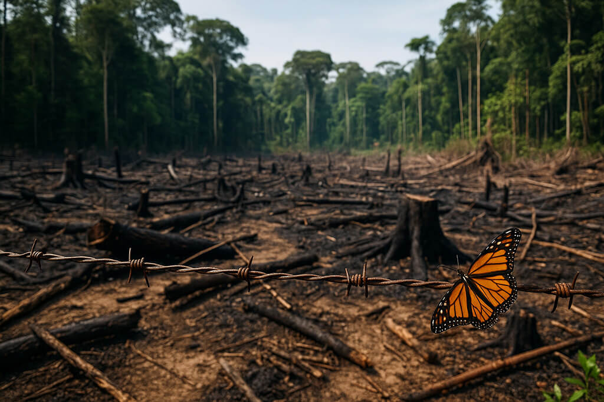
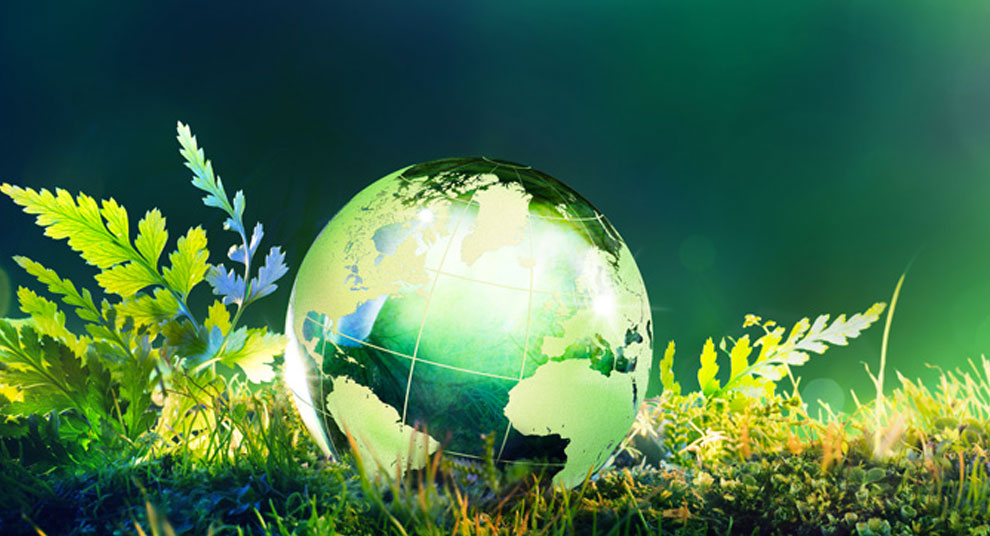
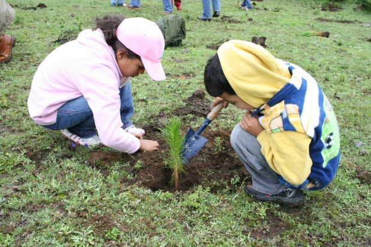

La conservación y protección de la naturaleza son esenciales para garantizar la salud de nuestro planeta y el bienestar de las generaciones futuras. La naturaleza nos brinda recursos vitales como agua, aire limpio, alimentos y medicinas, además de contribuir a la regulación del clima y la biodiversidad.
La acción humana, como la deforestación, la contaminación y el cambio climático, amenaza la estabilidad de los ecosistemas y la supervivencia de numerosas especies.

La conservación implica la preservación y restauración de hábitats naturales, así como la promoción de prácticas sostenibles en la agricultura, pesca y uso de recursos.
La protección de la naturaleza requiere la colaboración de gobiernos, organizaciones no gubernamentales, comunidades locales y cada individuo.
Desde la creación de áreas protegidas hasta la reducción de la huella de carbono, nuestras acciones pueden marcar la diferencia en la preservación de la belleza y el equilibrio de la naturaleza.

La conservación no solo es una responsabilidad moral, sino también una inversión en nuestro propio futuro.
Al cuidar de la naturaleza, aseguramos la continuidad de los servicios ecosistémicos que sustentan nuestra calidad de vida.
La naturaleza nos brinda innumerables regalos, y es nuestra tarea protegerla con la misma generosidad y gratitud
Algunas acciones que puedes poner en marcha con amigos y familiares:
1.Al visitar un parque, evita dejar basura.
2. Hazte consciencia sobre tus patrones de consumo: rechaza productos sobre envueltos, reutiliza lo que tienes, recicla aquel material que pueda ser de utilidad.
3. Cambia tus fuentes de energía en el hogar, coloca paneles solares.
4. Construye en casa un sistema de captura y almacenamiento de agua de lluvia.
5. Consume productos locales y de temporada.

6. Comparte con más personas tu vehículo.
7. Desconecta los aparatos de tu hogar cuando no los utilices.
8. Coloca bebederos y refugios para los animales.
9. Planta árboles nativos de tu localidad.
.jpeg)
10. Crea tu propio huerto familiar.
11. Separa tus desechos y con los residuos orgánicos elabora composta.
12. En tus diferentes actividades, haz un uso consiente y racional del agua.
13. Ropa y juguetes que ya no ocupes y se encuentren en buen estado, dónalos a personas que los necesiten.
14. Cuando los aparatos electrónicos y pilas dejen de funcionar, llévalos a un depósito destinado para su adecuado manejo.
| INICIO | MENU | ANTERIOR | SIGUIENTE |